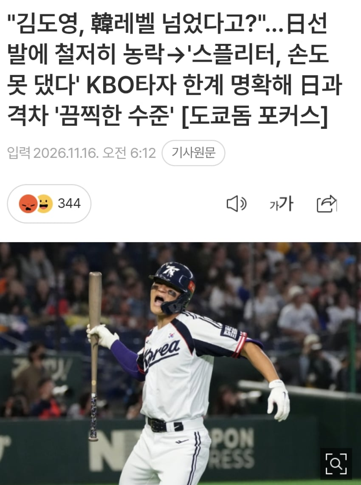
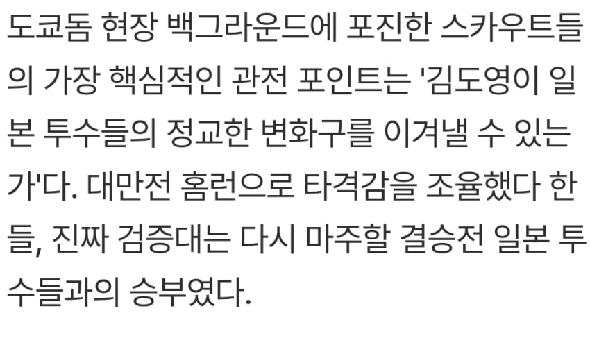
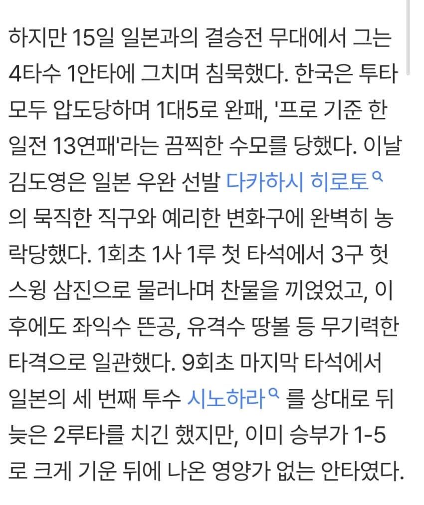
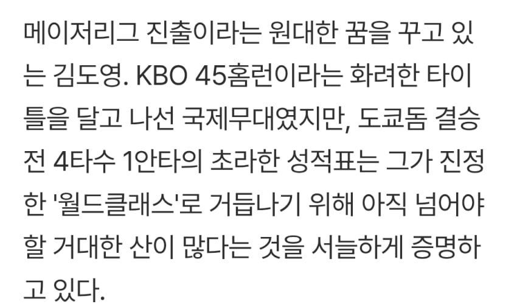

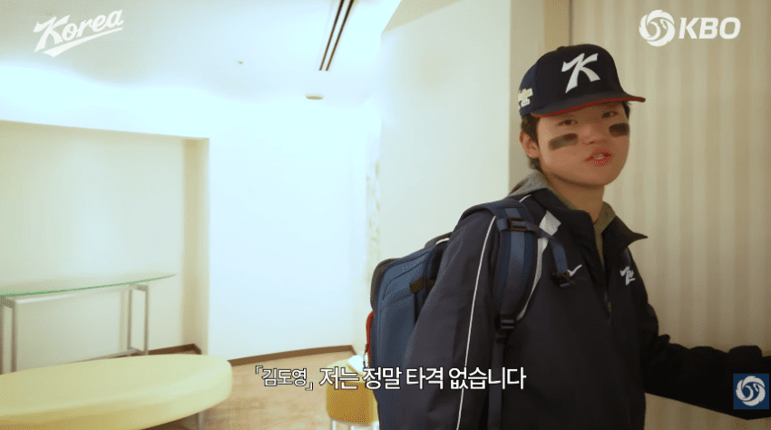
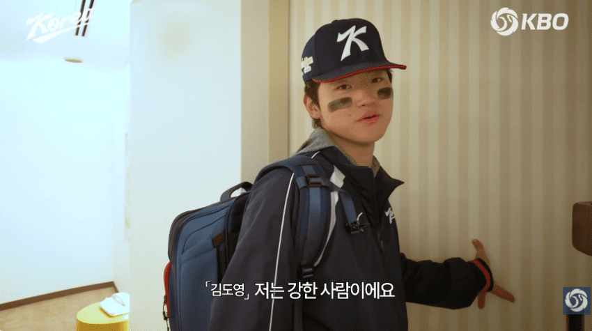
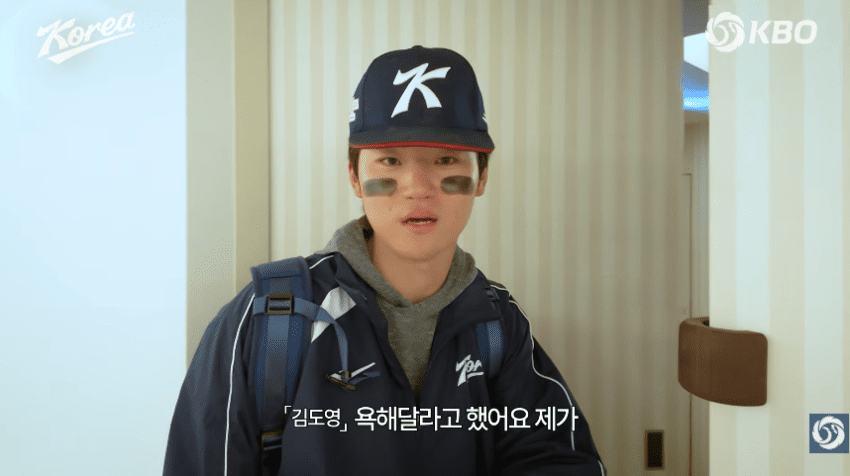
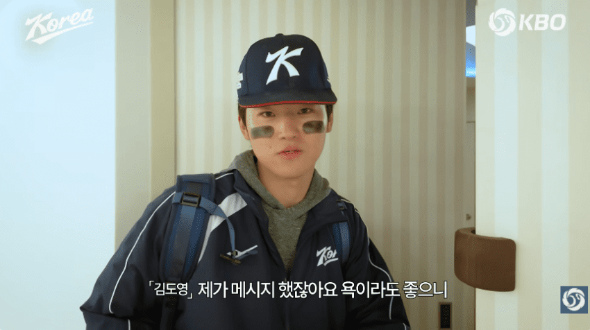
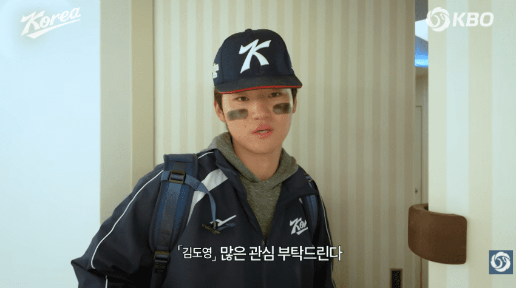
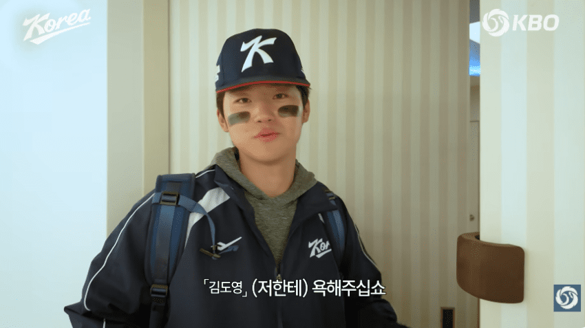
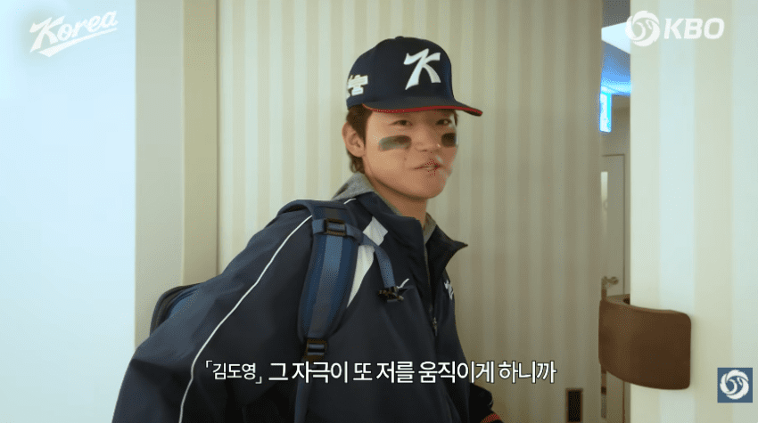
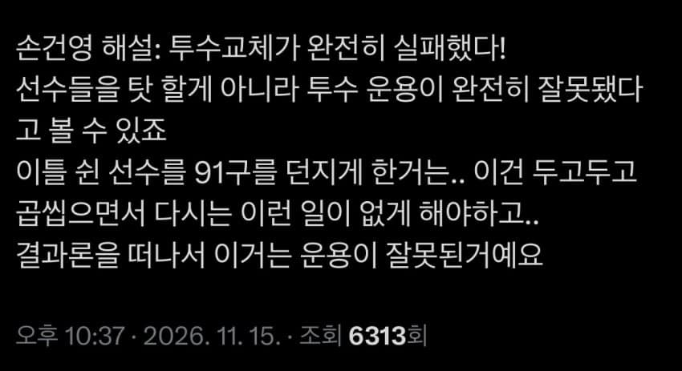
다른 해설들이 언급한거
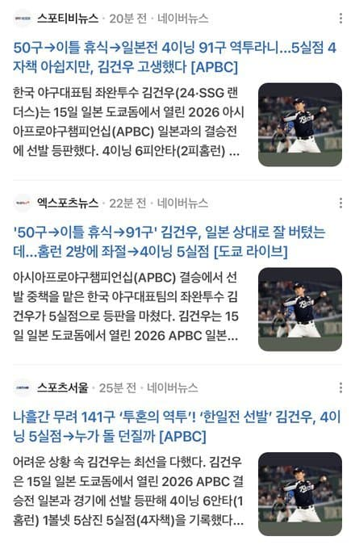
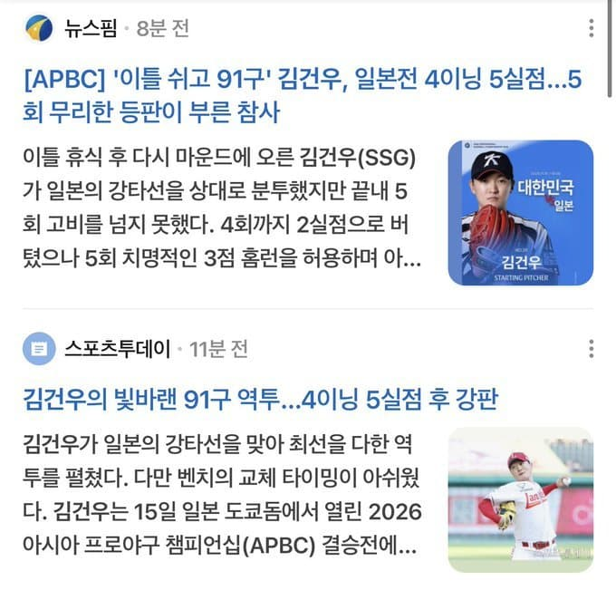
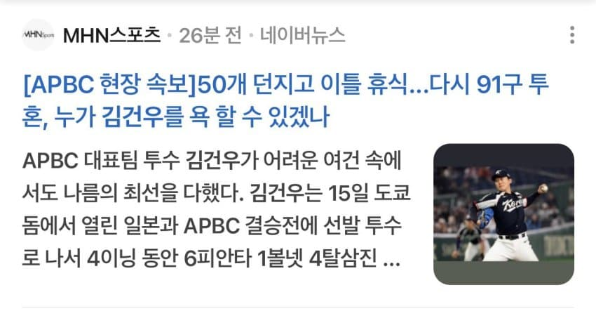
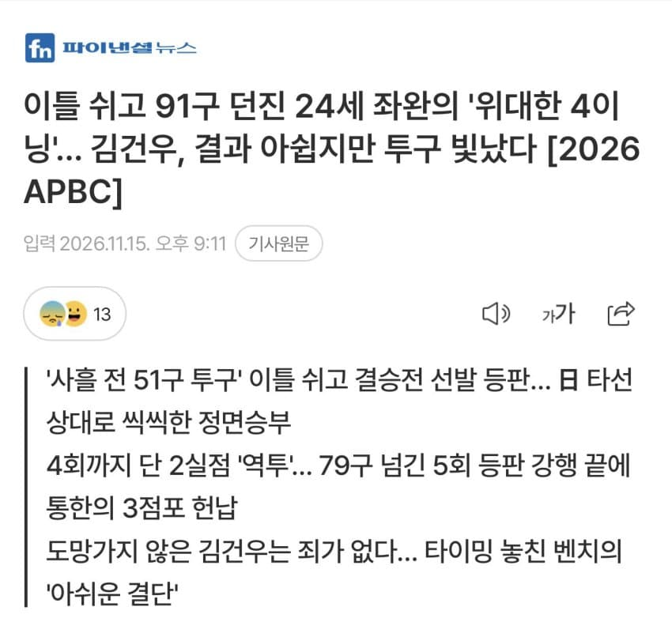
솔직히 선수죽이기 할까봐 걱정됐다
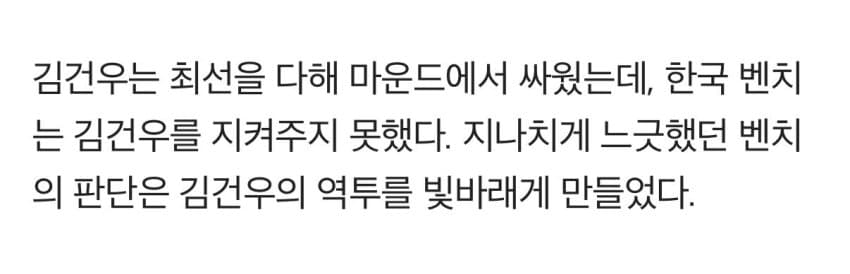
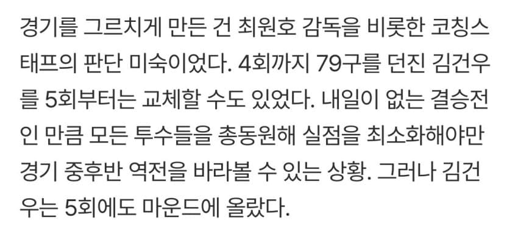
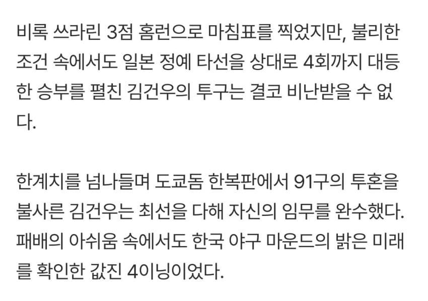
기사 내용들 보면 기자들도 욕나왔을듯
댓글
수집 당시 댓글 108개
삼갤러2 · 11.16 10:43:45
ㅇㅇ · 11.16 10:45:12
· ㅇㅇ · 11.16 10:48:41
· 삼갤러6 · 11.16 11:08:57
ㅇㅇ · 11.16 10:52:09
· ㅇㅇ · 11.16 10:53:29
· ㅇㅇ · 11.16 11:04:14
· ㅇㅇ · 11.16 11:20:01
· 삼갤러 · 11.16 11:52:29
· ㅇㅇ · 11.16 11:54:23
· 삼갤러11 · 11.16 12:00:46
· ㅇㅇ · 11.16 12:03:46
· 삼갤러11 · 11.16 12:08:32
· ㅇㅇ · 11.16 12:11:01
· 삼갤러11 · 11.16 12:12:09
· ㅇㅇ · 11.16 12:13:06
· 삼갤러11 · 11.16 12:14:08
· ㅇㅇ · 11.16 18:52:42
ㅇㅇ · 11.16 10:52:28
삼갤러3 · 11.16 10:58:57
· ㅇㅇ · 11.16 11:00:06
· ㅇㅇ · 11.16 11:00:47
· ㅇㅇ · 11.16 11:01:04
· 삼갤러4 · 11.16 11:03:21
· 삼갤러5 · 11.16 11:05:40
· ㅇㅇ · 11.16 11:06:35
· ㅇㅇ · 11.16 11:06:50
· 삼갤러3 · 11.16 11:09:10
· ㅇㅇ · 11.16 11:09:39
· ㅇㅇ · 11.16 11:10:13
· 삼갤러3 · 11.16 11:11:28
· 삼갤러7 · 11.16 11:14:26
· ㅇㅇ · 11.16 11:27:14
· 구장구 · 11.16 11:31:08
· 삼갤러3 · 11.16 11:34:01
· 삼갤러8 · 11.16 11:36:00
· 삼갤러8 · 11.16 11:36:28
· 구장구 · 11.16 11:45:29
· 삼갤러10 · 11.16 11:45:54
· ㅇㅇ · 11.16 11:51:34
· 삼갤러9 · 11.16 11:51:39
· 삼갤러11 · 11.16 12:00:11
· 삼갤러17 · 11.16 13:03:43
· ㅇㅇ · 11.16 13:09:17
ㅇㅇ · 11.16 11:25:24
삼갤러9 · 11.16 11:45:23
· 삼갤러 · 11.16 11:53:21
삼갤러11 · 11.16 11:59:06
삼갤러12 · 11.16 12:02:55
삼갤러14 · 11.16 12:36:54
삼갤러15 · 11.16 12:38:56
ㅇㅇ · 11.16 12:55:16
삼갤러16 · 11.16 12:57:56
ㅇㅇ · 11.16 13:19:28
· ㅇㅇ · 11.16 13:22:22
· ㅇㅇ · 11.16 18:56:39
삼갤러18 · 11.16 13:55:13
.시즈쿠. · 11.16 14:51:58
삼갤러19 · 11.16 15:34:33
· 삼갤러20 · 11.16 15:49:39
· ㅇㅇ · 11.16 16:46:10
삼갤러21 · 11.16 15:52:23
삐라 · 11.16 17:55:32
봇치쟝 · 11.16 18:56:23
ㅇㅇ · 11.16 18:57:07
· ㅇㅇ · 11.16 18:57:43
· ㅇㅇ · 11.16 19:01:07
ㅇㅇ · 11.16 18:58:02
ㅇㅇ · 11.16 18:59:02
깜찍한
수준
야갤러 · 11.16 18:59:57
야갤러 · 11.16 19:00:12
ㅇㅇ · 11.16 19:00:15
ㅇㅇ · 11.16 19:01:08
일본선발 2점대 방어율 베스트1.38
· ㅇㅇ · 11.16 19:03:09
· ㅇㅇ · 11.16 19:04:41
ㅇㅇ · 11.16 19:01:38
· ㅇㅇ · 11.16 19:07:50
쿠두두룩 · 11.16 19:01:47
ㅇㅇ · 11.16 19:03:46
ㅇㅇ · 11.16 19:04:24
ㅇㅇ · 11.16 19:05:11
ㅇㅇ · 11.16 19:06:20
ㅇㅇ · 11.16 19:07:34
멋진남자 · 11.16 19:07:36
ㅇㅇ · 11.16 19:09:27
ㅇㅇ · 11.16 19:10:36
· ㅇㅇ · 11.16 19:12:33
ㅇㅇ · 11.16 19:12:15
ㅇㅇ · 11.16 19:12:39
· ㅇㅇ · 11.16 19:14:13
ㅇㅇ · 11.16 19:15:03
ㅇㅇ · 11.16 19:16:42
· ㅇㅇ · 11.16 19:16:54
ㅇㅇ · 11.16 19:17:23
ㅇㅇ · 11.16 19:20:58
· ㅇㅇ · 11.16 19:29:07
ㅇㅇ · 11.16 19:21:14
ㅇㅇ · 11.16 19:21:18
ㅇㅇ · 11.16 19:23:24
ㅇㅇ · 11.16 19:27:16
삼갤러1 · 11.16 10:40:51
· 삼갤러11 · 11.16 12:01:44
· 삼갤러13 · 11.16 12:18:47
· ㅇㅇ · 11.16 12:57:57
ㅇㅇ · 11.16 10:41:15
ㅇㅇ · 11.16 10:41:50
· AfterMoon · 11.16 15:04:09
ㅇㅇ · 11.16 10:42:20